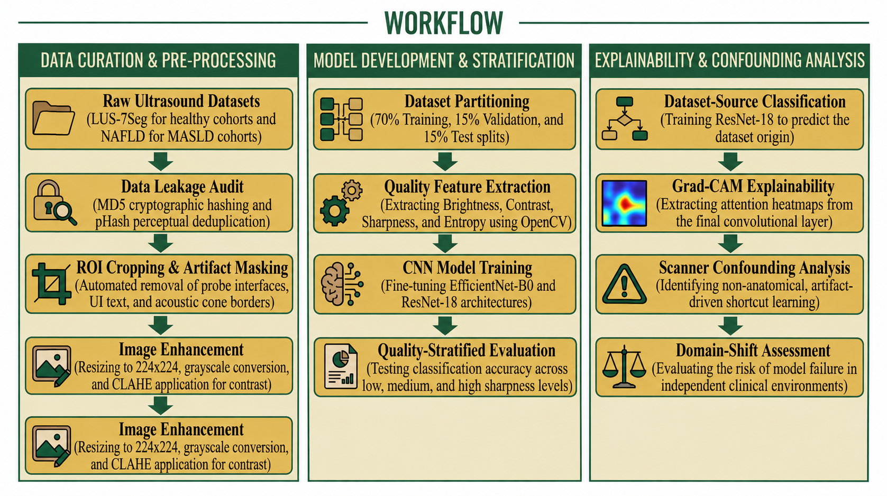
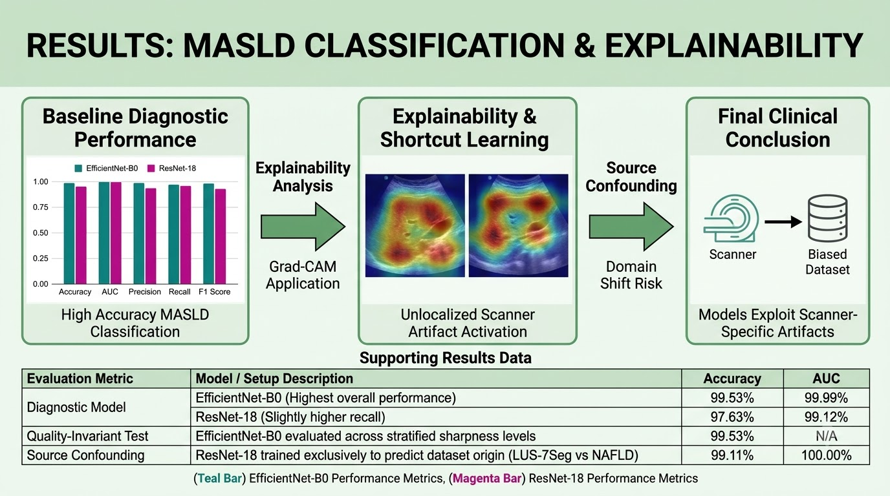

Quality-Aware Evaluation and Confounding Analysis of Deep Learning Models for Ultrasound-Based MASLD Detection
A quality-aware and explainable framework for evaluating deep learning models beyond accuracy.

Overview
Deep learning models routinely report very high accuracy for detecting Metabolic Dysfunction-Associated Steatotic Liver Disease (MASLD) from ultrasound. However, high accuracy alone does not confirm that a model is learning disease-specific biomarkers rather than exploiting shortcuts present in the dataset.
This study develops a quality-aware and explainable framework to investigate this problem. EfficientNet-B0 and ResNet-18 were trained on approximately 4,500 cropped liver ultrasound images from public datasets, followed by systematic analysis of image quality, data leakage, dataset confounding, and model attention.
Core research question: When a deep learning model achieves near-perfect performance on ultrasound-based MASLD detection, is it actually learning disease-related information — or is it exploiting differences between datasets and acquisition conditions?
Methods
- Datasets: LUS-7Seg healthy liver scans and a NAFLD/MASLD dataset were combined and standardized to grayscale 224 × 224 B-mode ultrasound images.
- Leakage auditing: MD5 hashing was used to identify exact duplicate images, while perceptual hashing (pHash) was used to identify near-duplicate images. Patient-level splitting was applied wherever possible.
- Preprocessing: Automated region-of-interest cropping was performed using OpenCV to remove probe interfaces, depth text, and acoustic cone borders, followed by CLAHE contrast enhancement.
- Image-quality analysis: Brightness, contrast, sharpness, and entropy were extracted for individual images.
- Deep learning models: EfficientNet-B0 and ResNet-18 were fine-tuned for binary classification of normal versus MASLD images.
- Training: Models were trained using AdamW optimization and binary cross-entropy loss over five epochs.
- Explainability: Grad-CAM was used to visualize the image regions contributing to model predictions.
- Confounding analysis: An additional classifier was trained to predict dataset origin rather than disease status. Strong performance would indicate potential source-related confounding.

Results
Deep Learning Model Performance
| Metric | EfficientNet-B0 | ResNet-18 |
|---|---|---|
| Accuracy | 99.53% | 97.63% |
| AUC | 99.99% | 99.12% |
| Precision | 99.57% | 95.31% |
| Recall | 99.15% | 98.73% |
| F1 Score | 99.36% | 96.89% |
Data Leakage Audit
The leakage audit identified 93 exact duplicates using MD5 hashing and 85 near-duplicates using perceptual hashing. After removing these images, the resulting dataset contained 4,458 images with zero cross-split overlap.
4,458 images
3,150 images
675 images
633 images
Quality-Stratified Evaluation
EfficientNet-B0 maintained approximately 99.53% accuracy across low-, medium-, and high-sharpness groups. This indicates that the reported performance did not show an obvious dependence on the measured image-quality variation within the evaluated dataset.

Key Finding
A ResNet-18 classifier trained only to predict dataset origin — without using disease labels — achieved 99.11% accuracy with an AUC of 1.0000.
Because dataset origin is strongly correlated with disease status in this combined dataset, the result indicates that the apparently excellent disease-classification performance may be substantially influenced by dataset-specific acquisition characteristics.
Grad-CAM analysis further showed diffuse activation across texture-rich regions in MASLD images rather than consistently localized attention within the liver parenchyma. This pattern is consistent with the possibility that the model is exploiting scanner, probe, or image-texture signatures instead of relying exclusively on genuine hepatic biomarkers.
MASLD and healthy images also demonstrated systematic differences in baseline image properties, including brightness, contrast, sharpness, and entropy. These differences may arise from the source datasets themselves and therefore cannot automatically be interpreted as disease-specific characteristics.
Why This Matters
Near-perfect accuracy in a single-source or poorly audited multi-source dataset can appear to represent a major clinical breakthrough while actually reflecting a data artifact.
This work emphasizes the importance of evaluating medical AI models beyond conventional accuracy metrics. Leakage auditing, quality-stratified analysis, source-confounding tests and explainability should be incorporated before interpreting high-performing models as clinically meaningful.
Takeaway: High model accuracy should not automatically be interpreted as evidence of reliable disease-specific learning. Understanding what information the model uses is equally important.
Limitations
- Healthy and MASLD images originated from separate datasets, meaning disease status and acquisition source are entangled.
- Patient-level identifiers were not consistently available across both datasets.
- External multi-center validation has not yet been performed.
- Disease severity and fibrosis staging were not evaluated.
- The findings indicate a risk of shortcut learning but do not definitively prove that the models learned no genuine disease-related biomarkers.
Future Work
Future extensions will focus on demographic subgroup evaluation, including sex, age and BMI, alongside model calibration using metrics such as Brier score and Expected Calibration Error (ECE).
Additional directions include domain adaptation, dataset harmonization and external multi-center validation to determine whether model performance remains robust across independent acquisition environments.
Project Information
Srinitha Sreekanth
Project Associate
Indian Institute of Technology Madras
Medical Imaging · Ultrasound · AI/ML
Reference
Quality-Aware Evaluation and Confounding Analysis of Deep Learning Models for Ultrasound-Based MASLD Detection.
Research work by Srinitha Sreekanth, Indian Institute of Technology Madras.